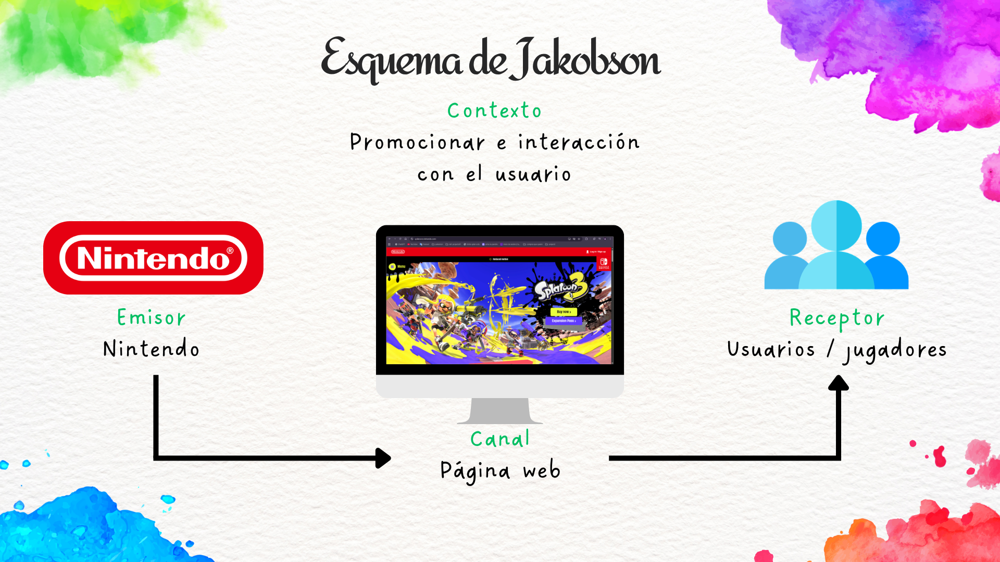
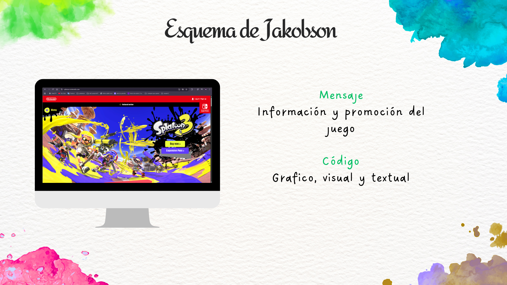
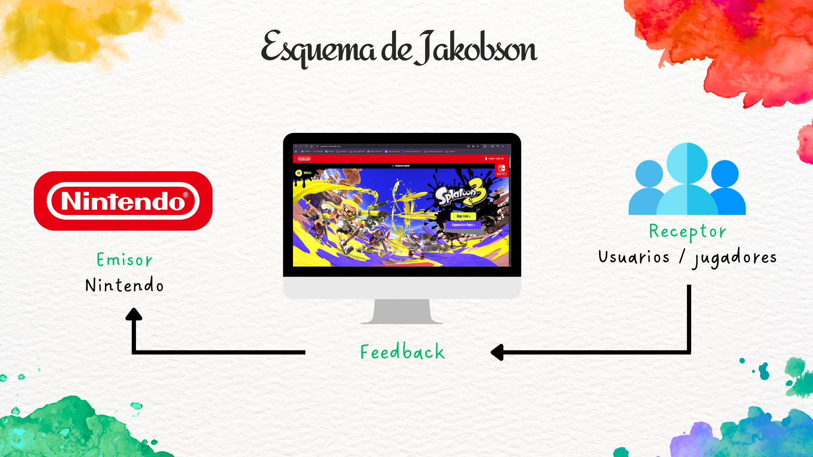

Sobre el Proyecto
Esta plataforma funciona como un archivo vivo y un catálogo crítico de los fundamentos conceptuales analizados durante el módulo de Teoría de la Imagen.
A través de un ecosistema visual y una arquitectura limpia, la web deconstruye los mecanismos de la percepción, el análisis formal y semiótico del lenguaje audiovisual y el impacto sociocultural de la imagen técnica en la contemporaneidad. El fin no es almacenar teoría literal, sino demostrar la asimilación práctica mediante la jerarquía de la información.
1. Capacidad Analítica: Diseccionar las capas denotativas y connotativas de cualquier artefacto visual contemporáneo.
2. Sintaxis Visual: Comprender las dinámicas de composición, equilibrio, color y peso visual aplicados al diseño de interfaces.
3. Gestión del Conocimiento: Curar y referenciar de forma fidedigna las fuentes clave que cimientan la cultura visual actual.
Este apartado introduce las bases de la comunicación visual a través del modelo de comunicación de Roman Jakobson y la semiótica de autores como Ferdinand de Saussure y Charles Sanders Peirce para la interpretación de signos visuales. Se desarrollan contenidos como:
- Modelo de Jakobson: Estudio de las seis funciones del lenguaje (expresiva, apelativa, poética, referencial, fática y metalingüística) aplicadas al diseño gráfico contemporáneo.
- Estructura del Signo: La división binaria de Saussure (significado y significante) frente a la tríada de Peirce (representamen, objeto e interprete), clasificando los signos en iconos, índices y símbolos.
- Retórica de la Imagen: El análisis de Roland Barthes sobre los tres mensajes estructurales: el mensaje lingüístico (anclaje y relevo), el mensaje icónico denotado y el icónico connotado.
- Contexto y Audiencias: Cómo las variaciones socio-culturales alteran la decodificación del mensaje visual según los modelos sociológicos de la comunicación de masas.




Este tema analiza las figuras retóricas aplicadas a la imagen y su function persuasiva dentro de la comunicación visual, tomando como referencia los estudios de Jacques Durand sobre la retórica publicitaria. Se trabajan recursos como:
- Operaciones Retóricas: Clasificación de Jacques Durand basada en operaciones de adjunción, supresión, sustitución y intercambio para generar metáforas, hipérboles, alegorías y elipsis visuales.
- Sintaxis de la Imagen: Estudio de los elementos morfológicos básicos definidos por Donis A. Dondis: el punto, la línea, el contorno, la dirección, el tono, el color, la textura y la proporción.
- Técnicas Visuales: Estrategias de comunicación visual contrapuestas como armonía/contraste, equilibrio/inestabilidad, simetría/asimetría, regularidad/irregularidad y economía/profusión.
- Composición y Peso: Análisis de la distribución del color, la forma y la jerarquía de los elementos gráficos para dirigir activamente la mirada del espectador en interfaces digitales.

Este apartado desarrolla los principios de percepción visual formulados por la escuela de la Gestalt (Max Wertheimer, Wolfgang Köhler y Kurt Koffka) y su aplicación directa en el diseño interactivo contemporáneo. Se explicarán principios como:
- Leyes Perceptivas Clave: Análisis en profundidad de los principios de proximidad, semejanza, continuidad, cierre, simetría y la relación fundamental entre figura y fondo.
- Pensamiento Visual: Concepto desarrollado por Rudolf Arnheim sobre cómo la mente procesa de forma integrada las estructuras visuales a través de fuerzas conceptuales de equilibrio y dinamismo.
- Aplicación en UX/UI: Uso de los principios psicológicos para agrupar elementos en menús, diseñar botones intuitivos y optimizar la carga cognitiva de un usuario al navegar en la web.
Además de la teoría, el apartado mostrará aplicaciones prácticas en disciplinas clave analizadas por teóricos como Rudolf Arnheim: diseño web, UX/UI, publicidad, identidad visual y composición gráfica.

Este tema reflexiona sobre la evolución de la imagen dentro de la cultura contemporánea y el cambio en el concepto tradicional de autor a partir de los Estudios de Cultura Visual (Nicholas Mirzoeff). Se abordarán ideas relacionadas con:
- Estudios de Cultura Visual: Aproximación teórica de Nicholas Mirzoeff sobre la constante mediación visual de la experiencia global y el análisis de la imagen digitalizada en la era de internet.
- La Muerte del Autor: Análisis del célebre ensayo de Roland Barthes, que desplaza el origen último del significado desde la intención del creador hacia la libre interpretación del lector.
- ¿Qué es un Autor?: El enfoque de Michel Foucault sobre la función-autor como un constructo social y jurídico que sirve para categorizar, delimitar y controlar la circulación de discursos.
- Apropiación Cultural: Estudio sobre la reinterpretación colectiva de contenidos, el sampleado visual, los memes y las dinámicas horizontales de creación artística colaborativa.
Este apartado explora el papel activo del espectador en la interpretación de las imágenes y obras visuales, fundamentado en la Escuela de Constanza. A partir de las teorías de Hans Robert Jauss y Wolfgang Iser, se trabajarán conceptos como:
- Horizonte de Expectativas: Concepto de Hans Robert Jauss que define el sistema de referencias culturales, históricos y estéticos compartidos que posee la audiencia al asimilar una obra.
- El Lector Implícito: Teoría de Wolfgang Iser sobre la estructura del texto o imagen que invita al espectador a rellenar "espacios vacíos" o indeterminaciones para completar el sentido del artefacto visual.
- Polisemia Visual: Cómo una única pieza gráfica altera de forma fluida su significado basándose directamente en el entorno del receptor, rompiendo con la noción de una lectura única y objetiva.
Este tema introduce el concepto de infografía como herramienta de síntesis y comunicación visual, apoyándose en los principios de claridad de Edward Tufte y Alberto Cairo. Se trabajarán:
- Principios de Claridad: La regla de Edward Tufte para maximizar el ratio dato-tinta, evitando el desorden decorativo innecesario ("chartjunk") que nubla la asimilación limpia de métricas.
- El Arte Funcional: Metodología de Alberto Cairo que equilibra la estética rigurosa con la precisión informativa, concibiendo la infografía como una tecnología cognitiva adaptada al usuario.
- Arquitectura Gráfica: Gestión avanzada de rejillas visuales, selección tipográfica proporcional, paletas cromáticas codificadas y uso estandarizado de familias iconográficas.
- Diseño Informativo: Estrategias narrativas eficientes para convertir bases de datos abstractas y complejas en flujos visuales ordenados, legibles y funcionales.
Este apartado analiza cómo la narrativa puede aplicarse al diseño visual y a la experiencia de navegación dentro de un producto digital, basándose en la psicología del diseño transmedia. Se desarrollarán contenidos relacionados con:
- Estructuras Narrativas: Estudio del Viaje del Héroe de Joseph Campbell, adaptado por Christopher Vogler en las doce etapas estructurales del viaje del escritor aplicadas al diseño de interacción.
- Arquetipos Universales: Uso práctico de los arquetipos de Carl Jung (el sabio, el héroe, el explorador, el rebelde) integrados en el diseño de interfaces digitales, branding corporativo y videojuegos.
- Storytelling e Interacción: Cómo gestionar el ritmo visual, la secuencia del movimiento lineal, la interactividad inmersiva y la experiencia del usuario (UX) para dar coherencia al mensaje multimedia.